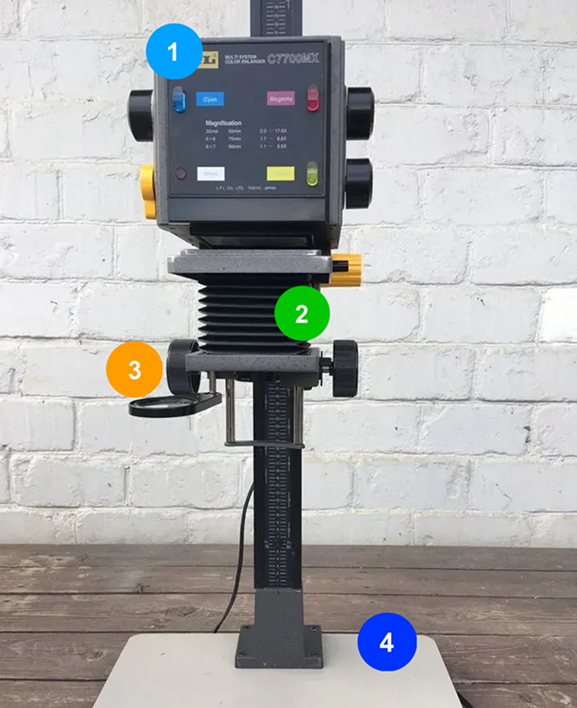
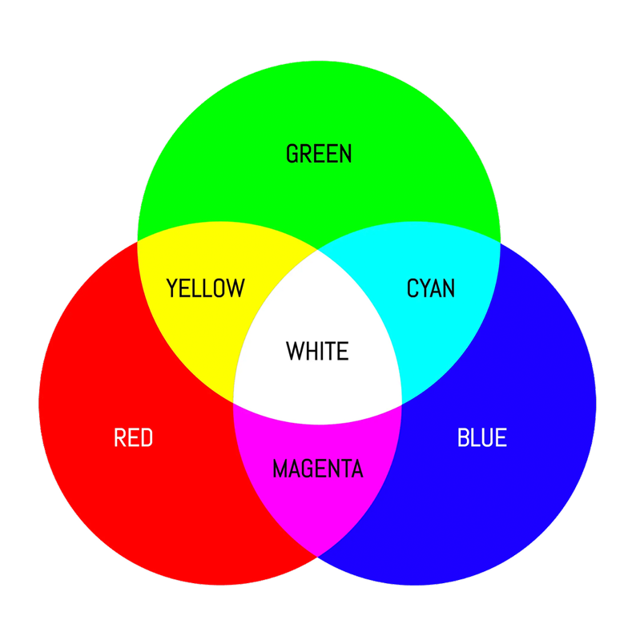

Enlarger

A color enlarger is different than a Black & White enlarger because
it uses CMYK values to control the color. It also makes prints from
color negatives by projecting the image onto color photographic
paper. It has built-in adjustable CMYK filters to control color
balance and contrast during exposure. By adjusting these filters,
you can correct color casts and fine-tune the look of the final
print. Read about different parts of the enlarger corresponding with
the numbers labeled on the image.
Now in terms of devweloping the image, the color darkroom developing
process differs from black and white in that it uses different
chemicals specifically designed for color prints instead of the
black and white developer, stop bath, and fixer. Color printing
requires precise temperature control and timing, which is why it's
often done using automated machines that ensure consistency. Unlike
black and white printing, which can be done manually under a red
safelight, color printing must be done in complete darkness because
color paper is sensitive to all light.
Producing color prints at home might be more difficult than bland &
white. Although it is totally possible with the right tools and
equipment, most people will find it eaier to simply send their
negatives to a printing facility or a camera shop that has a fully
functioning darkroom. Although they are rare, certain places offer
darkrooms for rent, which makes it possible to do the printing
process yourself.
Color Values & Fine-tuning your Print

There are three primary colors in negative colour photography: red,
green and blue. Inbetween that, there is cyan, magenta, and yellow.
Each film emulsion contains three layers of filters sensitive to
those colors, and the same applies to colour paper. When those
layers are combined they create the full picture.
As each film and batch of paper has different color dominance,
you'll need do adjust the color dials to get the colour balance that
you want. How do you do that? By using the enlarger's color dials.
The tricky thing about printing color film is that adjusting the
color levels works opposite. For example, on the color dials,
increasing cyan removes red, increasing magenta removes green, and
increasing yellow removes blue. If your image comes out too green,
you likely need to ADD magenta, not decrease cyan + yellow. Think of
it as a game of addition. On the right are examples of an image with
different color levels, and what adjustments were made.